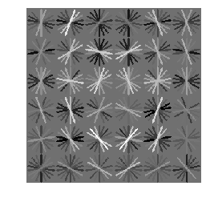
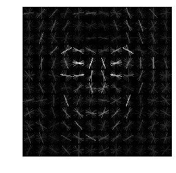
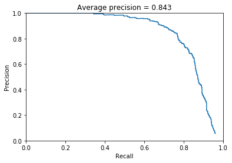
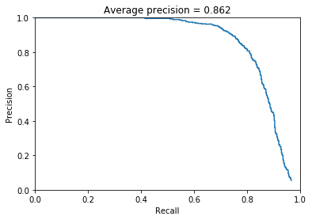
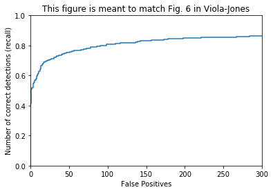

Assignment 5: Face Detection with a Sliding Window
Introduction:
This assignment is implementation of sliding window face detection algorithm. The first part of this assignment is to extract features and generate a corresponding label for positive and negative class each. The next step is training a machine learning based model to perform classification task. Mainly this assignment is divided in following sections:
Step I: Feature extraction for positive and negative examples
In this assignment, Histogram of Gradients (HoG) is used as features. First, we extract features from positive examples, the one with faces, and then we extract features for negative examples. HoG is a feature descriptor mainly used to extract features from the data. It breaks image in small portion and calculates orientation at localized portion. There are different design parameters for HoG, one can select different cell size or number of orientations which at the end makes features rich or of poor quality. For this assignment I have used cell_size of 6. The image window used to extract features is chosen to be 36. So, if the image is bigger than 36x36, either one can scale it down or convert it into tiles to get a 36x36 window. Given the limitations of having a smaller number of examples one can target different feature manipulation mechanism to get more examples of dataset. One way of manipulating is augmenting the dataset. For example, if there is a face, it will still have same visual representation if we flip it in any direction. Blurring the image, cropping, and squeezing the image are some of the operations which give a greater number of examples to learn from. The other possible way to look at this is extracting the features at multiple scale to get a better representation of the dataset. Using more scales mean increasing time required for feature extraction. I have used Hog descriptor for image and its mirror in case of positive examples, whereas for negative examples a scale space is chosen to extract the feature. The below table shows some comparison on model performance for different scales of images.
| Scale Space | True +ve rate | False +ve rate | True -ve rate | False -ve rate | Accuracy |
|---|---|---|---|---|---|
| [1 ,0.8,0.6,0.4] | 99.86% | 0.069% | 99.931% | 0.194% | 99.868% |
| [1,0.8,0.4,0.2] | 99.821% | 0.062% | 99.938% | 0.179% | 99.879% |
| [1,0.8,0.35] | 99.799% | 0.054% | 99.946% | 0.201% | 99.871% |
| [1,0.8,0.4] | 99.806% | 0.057% | 99.943% | 0.194% | 99.876% |
Extracting features from Positive examples
#This routine reads the image in graysclae use HoG to compute features
#############################################################################
# TODO: YOUR CODE HERE #
#############################################################################
n_cell = np.ceil(win_size/cell_size).astype('int')
feats = np.random.rand(len(positive_files)*2, n_cell*n_cell*31)
temp = 0
for filename in positive_files:
img = load_image_gray(filename) # reading image
mirror_img = img[:, ::-1] # mirror image
hog_feat = vlfeat.hog.hog(img, cell_size) # hog feature extraction
feats[temp,:] = hog_feat.flatten()# saving in features as a flattened matrix (vector)
temp = temp+1
hog_feat_mirror = vlfeat.hog.hog(mirror_img, cell_size) # hog feature extraction from mirror image
feats[temp, :] = hog_feat_mirror.flatten()# saving in features as a flattened matrix (vector)
temp = temp + 1
#############################################################################
# END OF YOUR CODE #
#############################################################################
The negative example images are not of the same shape i.e., each image has different dimension. Also given the criteria we used before we must keep the number of features same. Using a reduced version of image may not be helpful because we are losing valuable information. To tackle this challenge, I have taken a tiles of size 36x36 to maintain the same feature size while not reducing the image resolution. To enhance the dataset and to introduce the more diverse feature space I use different scaled versions of the image. Once the features are extracted randomly 15000 number of features are chosen to later train the model. The performance using different number of features is displayed in table below:
| Features | True +ve rate | False +ve rate | True -ve rate | False -ve rate | Accuracy |
|---|---|---|---|---|---|
| 10000 | 99.821% | 0.140% | 99.860% | 0.179% | 99.871% |
| 14000 | 99.806% | 0.057% | 99.943% | 0.194% | 99.876% |
| 15000 | 99.829% | 0.080% | 99.920% | 0.171% |
99.877% |
| 20000 | 99.754% | 0.045% | 99.955% | 0.246% | 99.874% |
Extracting features from Negative examples
#This routine reads the image in graysclae use HoG to compute features at three different scales
#############################################################################
# TODO: YOUR CODE HERE #
#############################################################################
n_cell = np.ceil(win_size/cell_size).astype('int')
feats=[]
k = 0
for filename in negative_files:
img = load_image_gray(filename)
scales = [1.0, 0.8, 0.4] # 3 Different scales for extracting the
for scale in scales: #
img = cv2.resize(img, dsize=None, fx=scale, fy=scale) # resizing to the scale of image
height, width = img.shape # extracting height and width
ntiles_height = int(height/36) # Number of possible tiles along height with height of 36 pixel
ntiles_width = int(width/36) # Number of possible tiles along width with width of 36 pixel
'''The below routine compute HOG features for each of the 36x36 tile
in the given image. Some images have height and/or width are not
completely divisible by 36. In that case I do not consider extra
pixel (less than 36)'''
for i in range(ntiles_height):
for j in range(ntiles_width):
if ((i+1)*36 <= height and (j+1)*36<=width): # select only complete tiles but not less than 36
s = img[36*i:36*(i+1) , 36*j: 36*(j+1)]
hog_feats = vlfeat.hog.hog(s, cell_size) # hog feature extraction
feats.append(hog_feats.flatten())
k = k+1
indices = np.random.randint(0,k,14000) # choosing 14000 values randomly
feats =np.asarray(feats) # Converting feature list into array
feats = feats[indices,:] # Only taking the 14000 random examples
#############################################################################
# END OF YOUR CODE #
#############################################################################
Step II: Training a classifier and fine tuning
This part of the assignment is mainly related to using the features to learn mapping from image to its class i.e., face or non-face. The design parameter C is required along with the X, the examples, and Y, the output label. In this part I have used Linear support vector machine to learn X to Y mapping. The C is regularization parameter, it specifies the strength of the regularization with inverse proportion to its value. The value of C can not be negative. The value of C is decided after experimenting with multiple thresholds. The below table gives a bird eye view of model evaluation for different values of C.
| Regularization (C) | True +ve rate | False +ve rate | True -ve rate | False -ve rate | Accuracy |
|---|---|---|---|---|---|
| 0.01 | 99.419% | 0.105% | 99.895% | 0.581% | 99.704% |
| 5e-2 | 99.754% | 0.045% | 99.955% | 0.246% | 99.874% |
| 5e-3 | 99.225% | 0.115% | 99.885% | 0.775% | 99.62% |
| 1e-4 | 97.17% | 0.250% | 99.75% | 2.83% | 98.714% |
| 1e-5 | 91.457% | 0.725% | 99.275% | 8.543% | 96.135% |
Support Vector Machine for Face and Non Face Classification
#############################################################################
# TODO: YOUR CODE HERE #
#############################################################################
c_ = C
clf = LinearSVC(C = c_)# Linear Support Vector Classification with c as Regularization parameter
y_pos = np.ones(((features_pos.shape[0]),1)) # positive class label
y_neg = np.ones(((features_neg.shape[0],1)))*-1 # Negative class label
# Stacking the labels and features vectors in a single column
y_train = np.vstack((y_pos,y_neg))
X_train = np.vstack((features_pos,features_neg))
#Training the model
svm = clf.fit(X_train,y_train[:,0])
#############################################################################
# END OF YOUR CODE #
#############################################################################
With C=5e-2, 14000 negative examples extracted using scale space of [1.0, 0.8, 0.4] is used to train Support vector Classifier (SVC). The resultant model when checked on the same data it performs well with accuracy of 99.872%. To fine tune the model we use the prediction of the model to collect false positive which are then again used to train the model. To increase robustness in the scheme the scale space technique is used with a scale space of [1.0, 0.8, 0.4]. Out of all the negative examples the 129 example tiles remain false positive. Retraining the model with the false positives and the examples we already have improves the true negatives detection and reduces the false positive rate from 0.079% to 0.036% but it does not improve the overall score of accuracy. The code below is for collecting the false positives from negative examples.
Collecting False Positve from Negative examples
#############################################################################
# TODO: YOUR CODE HERE #
#############################################################################
n_cell = np.ceil(win_size/cell_size).astype('int')
feats = []
i = 0
for filename in negative_files:
img = load_image_gray(filename)
scales = [1.0, 0.8,0.4] # 3 Different scales for extracting the
for scale in scales: #
img = cv2.resize(img, dsize=None, fx=scale, fy=scale) # resizing to the scale of image
height, width = img.shape # extracting height and width
ntiles_height = int(height/36) # Number of possible tiles along height with height of 36 pixel
ntiles_width = int(width/36) # Number of possible tiles along width with width of 36 pixel
'''The below routine compute HOG features for each of the 36x36 tile
in the given image. Some images have height and/or width are not
completely divisible by 36. In that case I do not consider extra
pixel (less than 36)'''
for i in range(ntiles_height):
for j in range(ntiles_width):
if ((i+1)*36 <= height and (j+1)*36<=width): # select only complete tiles but not less than 36
s = img[36*i:36*(i+1) , 36*j: 36*(j+1)]
hog_feats = vlfeat.hog.hog(s, cell_size) # hog feature extraction
y_pred = svm.predict(np.expand_dims(hog_feats.flatten(),axis=0))
if(y_pred == 1):
feats.append(hog_feats.flatten())
feats = np.asarray(feats)
#############################################################################
# END OF YOUR CODE #
#############################################################################
Step III:Developing a face detector powered with a Support Vector Classifier
This part of the assignment deals with detection of faces in each image. The first step is to create non-overlapping tiles from the input image, this input image tile is passed through HoG feature extractor and resultant is fed to SVC for classification. This task is done for multiple scales and then non-maxima suppression is used to get rid of repeated detection along with getting most confident detection. The code routine below shows the detection and saving of the results:
Sliding window apporach for face detection
#This routine takes an image and find the confident bounding box for all the faces
#############################################################################
# TODO: YOUR CODE HERE #
#############################################################################
k = 0 # Number of detections
threshold = -1 # Threshold value for deciding about the side of boundary we are at
stride = 1
cur_bboxes_old = np.empty((0, 4))
cur_confidences_old = np.empty((0))
scale_space = [0.9,0.8,0.7,0.65,0.5,0.4,0.35,0.2,0.1] #scale space
for scale in scale_space:
# initializing arrays
cur_x_min = np.empty((0, 1))
cur_y_min = np.empty((0, 1))
cur_bboxes = np.empty((0, 4))
cur_confidences = np.empty((0))
#Scaling image based on required scale
img = cv2.resize(im, dsize = None, fx = scale, fy = scale)
# Computing HOG features
features = vlfeat.hog.hog(img, cell_size)
for height in range(features.shape[0]):
for width in range(features.shape[1]):
x_min = height
y_min = width
if x_min+template_size < features.shape[0] and y_min+template_size < features.shape[1]:
#selecting a window of features (same like used for training)
feature_window = features[x_min:x_min+template_size,y_min:y_min+template_size]
feature_flattened = np.expand_dims(feature_window.flatten(),axis=0)
conf = svm.decision_function(feature_flattened)#side of the hyperplane
if conf >= threshold:
k = k + 1
#stacking results for x_min and y_min
cur_x_min = np.vstack((cur_x_min,x_min))
cur_y_min = np.vstack((cur_y_min,y_min))
cur_confidences = np.hstack((cur_confidences,conf))
x_min_image = (cur_x_min*template_size/scale).astype('int')
y_min_image = (cur_y_min*template_size/scale).astype('int')
x_max_image = ((cur_x_min + template_size)*template_size/scale).astype('int')
y_max_image = ((cur_y_min + template_size)*template_size/scale).astype('int')
cur_bboxes = np.hstack([y_min_image,x_min_image,y_max_image,x_max_image])
cur_bboxes_old = np.vstack((cur_bboxes_old,cur_bboxes))
cur_confidences_old = np.hstack((cur_confidences_old,cur_confidences))
cur_confidences = cur_confidences_old
cur_bboxes = cur_bboxes_old
#############################################################################
# END OF YOUR CODE #
#############################################################################
It can be seen from the above routine that sliding window along with scale space is used to effectively detect the faces in a given image.
Step IV:Experimental evaluation and Results
The evaluation is done mainly for the number of features, number of examples, different scale space, threshold C for linear support vector classifier. I also performed experiments for different value of cell_size in HoG feature extractor. This leads to more feature for a single example. The problem with small value of cell_size is it comes with a cost of more computation time. Because of its time expensive nature, a balance must be chosen to get the favourable results. The figure below shows HoG output for different value of cell_size.


|
|


|
|


|
|


|


|

Results

Results

Results

Results

Results
Results

Results
Results

Results

Results

Results
Results
Results
Results

Results

Results
Results
Results
Conclusion:
In this assignment, the main goal was to use manual feature extraction methods to train support vector classifier. Non maximal suppression is used to detect the best outcome. It is evident from the tables above that playing with parameters make big difference on accuracy. Using small step size leads to more average precision but also more false positives. Instead of choosing zero as threshold choosing threshold towards -ve class does help in getting good decision boundary for the end task of maximal suppression. Also, giving more top detection to Non-max-suppression will leads to more false positives. Its seems that giving 100 top detections works better. Using more top detections may cause trouble for the true positive to be thrown out.